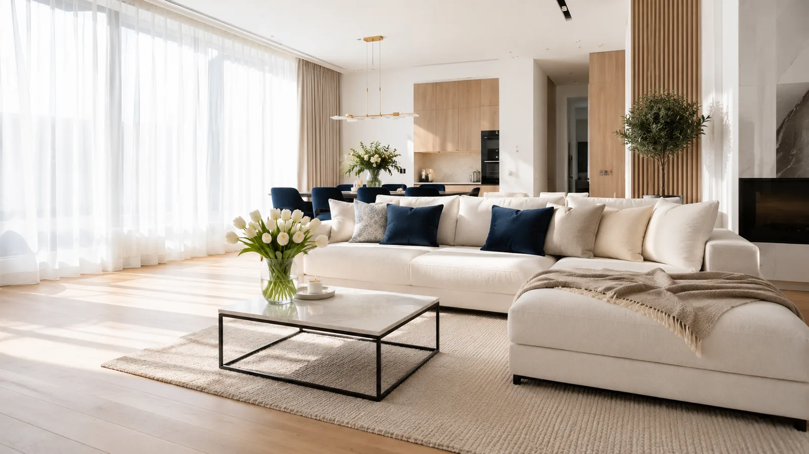

Upratovacie služby v Bratislave
Byty, kancelárie, tepovanie, žehlenie aj Airbnb. Prostriedky a doprava v cene.
Upratovanie bytov a domov
Jednorazovo aj pravidelne, bez obhliadky. Vyberiete si balík a pred upratovaním nám poviete priority.

Kancelárie, prevádzky a Airbnb
Priestory, kde balík na hodiny nesedí, riešime individuálne.
Kancelárie a prevádzky
Aj mimo pracovnej doby. Cena po bezplatnej obhliadke, faktúra na IČO.
Airbnb a Booking
Príprava medzi hosťami vrátane výmeny bielizne a uterákov.
Špeciálne priestory
Ateliéry, štúdiá, priestory po rekonštrukcii či sťahovaní.
Pošlite nezáväzný dopyt — ozveme sa do 24 hodín.
Tepovanie sedačiek, kobercov a matracov
Hĺbkové čistenie extrakčnou metódou — odstráni škvrny, prach, roztoče aj zápach.
Sedačky a kreslá
Látkové sedačky, rohové súpravy aj čalúnené stoličky.
Koberce
Kusové aj celoplošné, priamo u vás doma.
Matrace a postele
Vhodné pre alergikov — odstraňuje roztoče a prach.
Kožená sedačka
Koža sa netepuje. Namiesto toho ju odborne vyčistíme a ošetríme.
Trojmiestna sedačka ≈ 1 hodina, rohová 1,5–2 hodiny; čalúnenie schne 4–8 hodín. Viac na stránke Tepovanie Bratislava.
Žehlenie bielizne u vás doma
Žehlenie bielizne v Bratislave stojí 49,90 € za dve hodiny. Prídeme k vám s vlastnou naparovacou žehličkou, doskou aj vešiakmi a vyžehlíme to, čo máte vyprané a suché. Bielizeň od vás neodvážame — žehlí sa u vás a máte prácu na očiach.
Košele a blúzky
Aj spoločenské nohavice s pukmi.
Tričká a detské veci
Tričká, mikiny aj detské oblečenie.
Posteľná bielizeň a uteráky
Plachty, obliečky, uteráky aj osušky.
Obrusy a utierky
Vyžehlíme aj rovné domáce textílie. Zavesené záclony a závesy nežehlíme.
Platíte za dohodnutý čas. Ak toho máte viac, ďalšiu hodinu si pridáte priamo pri rezervácii — alebo sa dohodneme na mieste ešte pred začiatkom.
Čo od vás potrebujeme: vypranú a suchú bielizeň, voľnú plochu asi 1,5 × 1 m, zásuvku v dosahu a miesto na vešanie. Dosku a žehličku nosíme vlastnú. V cene: roztriedenie, žehlenie, zavesenie na vešiaky a poskladanie na stohy na miesto, ktoré určíte — do skríň zakladáme len po dohode.
Nepereme a neodstraňujeme škvrny. Nežehlíme hodváb, vlnu a kašmír, satén a plisé, kusy s potlačou, flitrami a aplikáciami, kožu a semiš, svadobné šaty ani kusy bez etikety so symbolmi ošetrovania — bez etikety sa teplota nedá bezpečne určiť. Ak na takom kuse trváte, vyžehlíme ho na vašu výslovnú žiadosť a riziko.
Koľko to stojí
Upratovanie v Bratislave stojí od 79,90 € za balík Mini (3 hodiny), 99,90 € za Komfort (4 hodiny), 139,90 € za Klasik (6 hodín), 169,90 € za Maxi (8 hodín) a 199,90 € za Maxi s tepovaním (8 hodín upratovania a 1 hodina tepovania). Platíte za čas — balík si vyberajte podľa toho, koľko práce treba, nie podľa veľkosti bývania. Cena je konečná — čistiace prostriedky, vybavenie, umytie okien aj doprava po Bratislave sú v nej. Nie sme platiteľmi DPH.
Vo všetkých balíkoch robíme to isté. Líši sa len čas — a podľa neho to, koľko sa stihne. Kratší balík je na udržiavané bývanie, dlhší na generálne upratovanie.
- 3 hodiny79,90 €26,63 €/hod
- 4 hodiny99,90 €24,98 €/hod
- 6 hodín139,90 €23,32 €/hod
- 8 hodín169,90 €21,24 €/hod
- 8 h + tepovanie199,90 €hodina tepovania 30 €
Doplnkové služby
K balíkom Maxi a Maxi s tepovaním stojí tepovanie 30 € za hodinu. Tepovanie sa účtuje za každú začatú hodinu. Pri rezervácii zaplatíte prvú hodinu, ďalšie doúčtujeme faktúrou po skončení.
Na okná vo výške treba rebrík — ak ho nemáte, donesieme vlastný za 10 € pri každom balíku. Zľava −15 % pre dôchodcov a ZŤP — zadajte kód SOLIDARITA15 pri rezervácii. Zľava platí len na cenu služby, nie na príplatky.
Vyberte si termín, zvyšok je na nás
Rezervácia do minúty, potvrdenie okamžite. Zrušenie zdarma do 24 hodín pred termínom.
Rezervovať termín Zavolať: +421 949 061 088